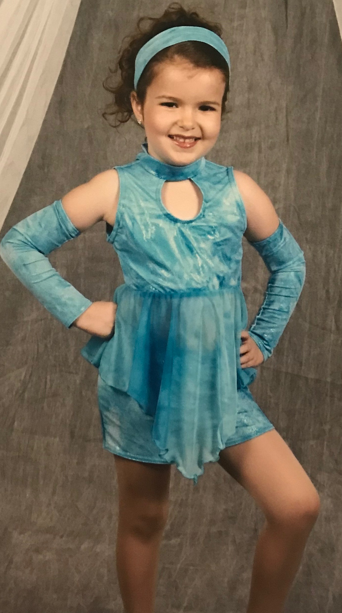
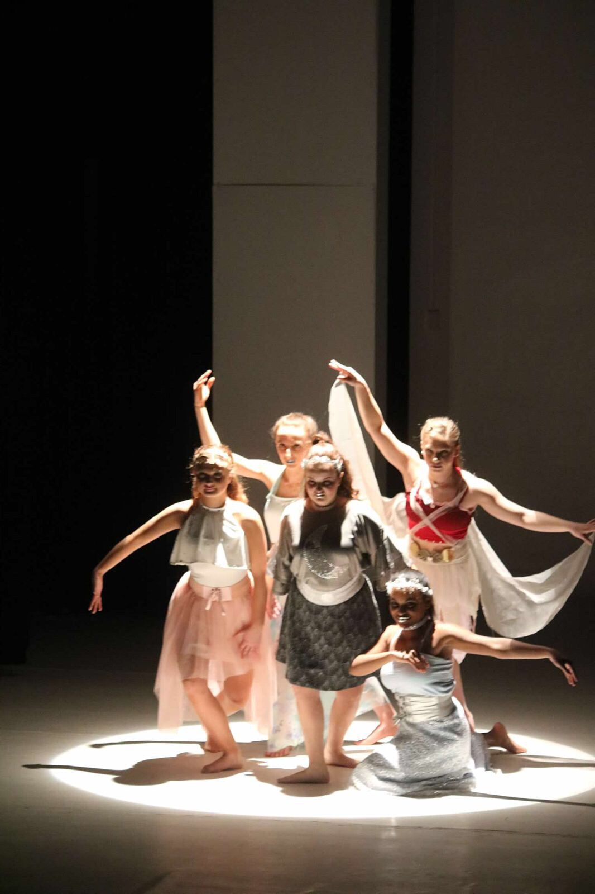

Dancing has been a part of my life for as long as I can remember. I started young and it carried me through high school and beyond. Although while being in college, I don't dance as often as I'd like, I work for the dance studio I danced at through high school. I student instruct and get to spend time helping the owner with administrative tasks when I go home.
My biggest piece of advice is that you don't have to dance competitively or with a company or studio to be able to enjoy dancing. Anyone can sign up for a class no matter their age. Dancing is a great way to express yourself with a community of fellow dancers around you.